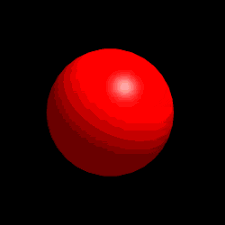

dal.jpg)
The experiments of John Dalton led to the acceptance of the idea of atoms as the fundamental particle. He studied the air and how much water vapor could be in the air. Dalton studied gases and their pressure and also simple chemical compounds. He concluded that: All elemtents are composed of atoms, which are indivisible and indestructible particles. Atoms of the same element are exactly alike and atoms of different elements are different. Compounds are formed by the joining of atoms of two or more elements.
This theory became one of the foundations of modern chemistry.
After we have:Joseph John Thomson